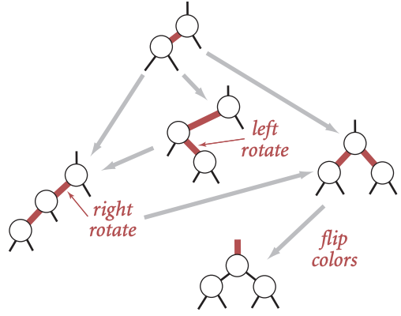

<!DOCTYPE html>
<html lang="en">
  <head>
    <meta charset="utf-8" />
    <meta name="viewport" content="width=device-width, initial-scale=1.0, maximum-scale=1.0, user-scalable=no" />

    <title></title>
    <link rel="stylesheet" href="dist/reveal.css" />
    <link rel="stylesheet" href="dist/theme/iph.css" id="theme" />
    <link rel="stylesheet" href="plugin/highlight/spyder.css" />
	<link rel="stylesheet" href="css/layout.css" />
	<link rel="stylesheet" href="plugin/customcontrols/style.css">


    <script defer src="dist/fontawesome/all.min.js"></script>

	<script type="text/javascript">
		var forgetPop = true;
		function onPopState(event) {
			if(forgetPop){
				forgetPop = false;
			} else {
				parent.postMessage(event.target.location.href, "app://obsidian.md");
			}
        }
		window.onpopstate = onPopState;
		window.onmessage = event => {
			if(event.data == "reload"){
				window.document.location.reload();
			}
			forgetPop = true;
		}

		function fitElements(){
			const itemsToFit = document.getElementsByClassName('fitText');
			for (const item in itemsToFit) {
				if (Object.hasOwnProperty.call(itemsToFit, item)) {
					var element = itemsToFit[item];
					fitElement(element,1, 1000);
					element.classList.remove('fitText');
				}
			}
		}

		function fitElement(element, start, end){

			let size = (end + start) / 2;
			element.style.fontSize = `${size}px`;

			if(Math.abs(start - end) < 1){
				while(element.scrollHeight > element.offsetHeight){
					size--;
					element.style.fontSize = `${size}px`;
				}
				return;
			}

			if(element.scrollHeight > element.offsetHeight){
				fitElement(element, start, size);
			} else {
				fitElement(element, size, end);
			}		
		}


		document.onreadystatechange = () => {
			fitElements();
			if (document.readyState === 'complete') {
				if (window.location.href.indexOf("?export") != -1){
					parent.postMessage(event.target.location.href, "app://obsidian.md");
				}
				if (window.location.href.indexOf("print-pdf") != -1){
					let stateCheck = setInterval(() => {
						clearInterval(stateCheck);
						window.print();
					}, 250);
				}
			}
	};


        </script>
  </head>
  <body>
    <div class="reveal">
      <div class="slides"><section  data-markdown><script type="text/template"><!-- .slide: class="has-light-background drop" data-background-color="#f8f8f8" -->
<div class="" style="position: absolute; left: 0px; top: 0px; height: 700px; width: 960px; min-height: 700px; display: flex; flex-direction: column; align-items: center; justify-content: center" absolute="true">

### Estructura de Datos y Algoritmos - EDA

####  *RBT*

[Eduardo Rosales](mailto:ee.rosales24@uniandes.edu.co)

Departamento de Ingeniería de Sistemas y Computación

Universidad de los Andes
</div></script></section><section  data-markdown><script type="text/template"><!-- .slide: class="has-light-background drop" data-background-color="#f8f8f8" -->
<div class="" style="position: absolute; left: 0px; top: 0px; height: 700px; width: 960px; min-height: 700px; display: flex; flex-direction: column; align-items: center; justify-content: center" absolute="true">

### Árbol balanceados

- Ventajas:
	- Búsqueda, inserción y eliminación
		-  Tienden a  O(log n)
- Desventajas:
	- Mantener al árbol balanceado es un proceso muy costoso
	- Se requiere que las llaves no lleguen ordenadas

	<br>

- **Solución**:
	- Mantener un balance imperfecto (más flexible)
		- Lo suficientemente bueno para lograr mayoritariamente **O(log n)**
			- Independiente del orden de entrada de los datos
</div></script></section><section  data-markdown><script type="text/template"><!-- .slide: class="has-light-background drop" data-background-color="#f8f8f8" -->
<div class="" style="position: absolute; left: 0px; top: 0px; height: 700px; width: 960px; min-height: 700px; display: flex; flex-direction: column; align-items: center; justify-content: center" absolute="true">

### Árbol Rojo Negro -  Red-Black Tree (RBT)

- En el curso se estudia el
	- **Left-Leaning Red-Black Tree (LLRBT)**
		- Tipo de árbol binario
		- Variante de BST 
			- Que se equilibra después de 
				- Inserciones y eliminaciones
					- Para evitar la degradación del rendimiento
		- Ideal para sistemas de bases de datos
			- Y estructuras de memoria que requieren acceso rápido
</div></script></section><section  data-markdown><script type="text/template"><!-- .slide: class="has-light-background drop" data-background-color="#f8f8f8" -->
<div class="" style="position: absolute; left: 0px; top: 0px; height: 700px; width: 960px; min-height: 700px; display: flex; flex-direction: column; align-items: center; justify-content: center" absolute="true">

### Nodos

- **Nodo rojo** y **nodo negro**:
	- Estados posibles de los nodos 
		- Que cumplen ciertas propiedades para mantener el equilibrio

- Visualmente, el color se puede encapsular en el enlace o en el nodo
</div></script></section><section  data-markdown><script type="text/template"><!-- .slide: class="has-light-background drop" data-background-color="#f8f8f8" -->
<div class="" style="position: absolute; left: 0px; top: 0px; height: 700px; width: 960px; min-height: 700px; display: flex; flex-direction: column; align-items: center; justify-content: center" absolute="true">

### Propiedades del LLRBT

1. Al momento de insertar un nodo, este tiene un **enlace rojo**
	-  Excepto **la raíz que siempre es negra**

2. **Todo enlace rojo se inclina a la izquierda**
    
3.  **No se permiten enlaces rojos a la derecha** 
    
4.  **No se permiten dos enlaces rojos consecutivos**
</div></script></section><section  data-markdown><script type="text/template"><!-- .slide: class="has-light-background drop" data-background-color="#f8f8f8" -->
<div class="" style="position: absolute; left: 0px; top: 0px; height: 700px; width: 960px; min-height: 700px; display: flex; flex-direction: column; align-items: center; justify-content: center" absolute="true">

### Operaciones de reestructuración del árbol (1/3)


- Son las operaciones que el árbol aplica al **insertar** o **eliminar** nodos
	- Para mantener sus propiedades

	<br>

- **Rotación Izquierda**: 
	- Endereza un enlace rojo derecho
		- Pasándolo a la izquierda 
			- Y subiendo el nodo que estaba a la derecha
    
- **Rotación Derecha**: 
	- Rompe una cadena de dos nodos rojos en la izquierda
		- Pasando el rojo hacia abajo 
			- Y subiendo al hijo izquierdo
</div></script></section><section  data-markdown><script type="text/template"><!-- .slide: class="has-light-background drop" data-background-color="#f8f8f8" -->
<div class="" style="position: absolute; left: 0px; top: 0px; height: 700px; width: 960px; min-height: 700px; display: flex; flex-direction: column; align-items: center; justify-content: center" absolute="true">

### Operaciones de reestructuración del árbol (2/3)

    
- **Cambio de color**: 
	- Intercambia los colores del nodo padre y de sus dos hijos
		- Objetivo: Cantidad constante de nodos negros en cada camino

- **Validación:**
	- Se verifica que el árbol cumpla con todas las propiedades
		- Si no es así, se hacen las reestructuraciones necesarias
			- De manera recursiva hasta que se cumplan
</div></script></section><section  data-markdown><script type="text/template"><!-- .slide: class="has-light-background drop" data-background-color="#f8f8f8" -->
<div class="" style="position: absolute; left: 0px; top: 0px; height: 700px; width: 960px; min-height: 700px; display: flex; flex-direction: column; align-items: center; justify-content: center" absolute="true">

### Operaciones de reestructuración del árbol (3/3)



</div></script></section><section  data-markdown><script type="text/template"><!-- .slide: class="has-light-background drop" data-background-color="#f8f8f8" -->
<div class="" style="position: absolute; left: 0px; top: 0px; height: 700px; width: 960px; min-height: 700px; display: flex; flex-direction: column; align-items: center; justify-content: center" absolute="true">

### Comprendamos todas las propiedades y operaciones de reestructuración de los LLRBTs
</div></script></section><section  data-markdown><script type="text/template"><!-- .slide: class="has-light-background drop" data-background-color="#f8f8f8" -->
<div class="" style="position: absolute; left: 0px; top: 0px; height: 700px; width: 960px; min-height: 700px; display: flex; flex-direction: column; align-items: center; justify-content: center" absolute="true">

### Ejemplo detallado de LLRBT


- [Ejemplo RBT](https://eerosales24.github.io/eda_2025_20/m3/rbt.ppsx)


\* Para mejor visibilidad, por favor abrir los archivos en PowerPoint
</div></script></section><section  data-markdown><script type="text/template"><!-- .slide: class="has-light-background drop" data-background-color="#f8f8f8" -->
<div class="" style="position: absolute; left: 0px; top: 0px; height: 700px; width: 960px; min-height: 700px; display: flex; flex-direction: column; align-items: center; justify-content: center" absolute="true">

### Complejidad temporal - LLRBT

- Búsqueda, inserción, eliminación:

	- **Mejor caso O(1)**:
		- En la raíz o muy cerca

	- **Caso promedio O(log n):**
		- Si se requiere de una cantidad pequeña 
			- De operaciones de restructuración

	- **Peor caso tiende más a O(log n)** que a  O(n):
		- Múltiples operaciones de reestructuración en el camino de subida
</div></script></section><section  data-markdown><script type="text/template"><!-- .slide: class="has-light-background drop" data-background-color="#f8f8f8" -->
<div class="" style="position: absolute; left: 0px; top: 0px; height: 700px; width: 960px; min-height: 700px; display: flex; flex-direction: column; align-items: center; justify-content: center" absolute="true">

### BST vs LLRBT (1/4)

- **¿Cuándo usar un BST?**

	- Los datos son **estáticos** o **cambian poco**
    
	- Las **inserciones y eliminaciones** son poco frecuentes
	    
	- Las **llaves no llegan ordenadas** 
		- Idealmente aleatorias
	    
	- Se puede **garantizar cierto nivel de balance**
</div></script></section><section  data-markdown><script type="text/template"><!-- .slide: class="has-light-background drop" data-background-color="#f8f8f8" -->
<div class="" style="position: absolute; left: 0px; top: 0px; height: 700px; width: 960px; min-height: 700px; display: flex; flex-direction: column; align-items: center; justify-content: center" absolute="true">

### BST vs LLRBT (2/4)


- **¿Cuándo usar un BST?**

	- El **peor caso (`O(n)`) es aceptable** según la aplicación
	    
	- Se necesita una **estructura simple y fácil de implementar**
	    
	- Se busca **máximo control manual** sobre el comportamiento del árbol
	    
	- Es suficiente con una estructura **ligera y sin sobrecarga de reequilibrio**
</div></script></section><section  data-markdown><script type="text/template"><!-- .slide: class="has-light-background drop" data-background-color="#f8f8f8" -->
<div class="" style="position: absolute; left: 0px; top: 0px; height: 700px; width: 960px; min-height: 700px; display: flex; flex-direction: column; align-items: center; justify-content: center" absolute="true">

### BST vs LLRBT (3/4)

- **¿Cuándo usar un LLRBTT?**

	- Hay **inserciones y eliminaciones frecuentes**
	    
	- El conjunto de datos **cambia dinámicamente**
	    
	- Se necesita **rendimiento garantizado de `O(log n)`**
	    
	- Las operaciones deben ser **eficientes y predecibles** 
		- Incluso en el peor caso
</div></script></section><section  data-markdown><script type="text/template"><!-- .slide: class="has-light-background drop" data-background-color="#f8f8f8" -->
<div class="" style="position: absolute; left: 0px; top: 0px; height: 700px; width: 960px; min-height: 700px; display: flex; flex-direction: column; align-items: center; justify-content: center" absolute="true">

### BST vs LLRBT (4/4)

- **¿Cuándo usar un LLRBTT?**

	- No se puede garantizar que los datos **lleguen en orden aleatorio**
	    
	- Se necesita un **balance automático** sin intervención externa
	    
	- Se requiere una estructura **probada, robusta y ampliamente usada**
</div></script></section><section  data-markdown><script type="text/template"><!-- .slide: class="has-light-background drop" data-background-color="#f8f8f8" -->
<div class="" style="position: absolute; left: 0px; top: 0px; height: 700px; width: 960px; min-height: 700px; display: flex; flex-direction: column; align-items: center; justify-content: center" absolute="true">


</div></script></section><section  data-markdown><script type="text/template"><!-- .slide: class="has-light-background drop" data-background-color="#f8f8f8" -->
<div class="" style="position: absolute; left: 0px; top: 0px; height: 700px; width: 960px; min-height: 700px; display: flex; flex-direction: column; align-items: center; justify-content: center" absolute="true">

###  Árboles RBT – API


- **TODO:**
	- Revisar la [documentación de árboles](https://isis1225devs.github.io/ISIS1225-Structure-Documentation/DataStructures.Tree.html#order-map-arboles)
		- En particular del  [RBT](https://isis1225devs.github.io/ISIS1225-Structure-Documentation/DataStructures.Tree.html#module-DataStructures.Tree.red_black_tree)


- Lectura de sugerencia:
	- [Left-leaning Red-Black Trees](https://sedgewick.io/wp-content/themes/sedgewick/papers/2008LLRB.pdf)
</div></script></section><section  data-markdown><script type="text/template"><!-- .slide: class="has-light-background drop" data-background-color="#f8f8f8" -->
<div class="" style="position: absolute; left: 0px; top: 0px; height: 700px; width: 960px; min-height: 700px; display: flex; flex-direction: column; align-items: center; justify-content: center" absolute="true">

<i class="fas fa-question-circle fa-2x fa-spin fa-4x"></i>


<br>
<br>


[<i class="fas fa-home  fa-3x"></i>](https://eerosales24.github.io/eda_2025_20/#)
</div></script></section></div>
    </div>

    <script src="dist/reveal.js"></script>

    <script src="plugin/markdown/markdown.js"></script>
    <script src="plugin/highlight/highlight.js"></script>
    <script src="plugin/zoom/zoom.js"></script>
    <script src="plugin/notes/notes.js"></script>
    <script src="plugin/math/math.js"></script>
	<script src="plugin/mermaid/mermaid.js"></script>
	<script src="plugin/chart/chart.min.js"></script>
	<script src="plugin/chart/plugin.js"></script>
	<script src="plugin/customcontrols/plugin.js"></script>

    <script>
      function extend() {
        var target = {};
        for (var i = 0; i < arguments.length; i++) {
          var source = arguments[i];
          for (var key in source) {
            if (source.hasOwnProperty(key)) {
              target[key] = source[key];
            }
          }
        }
        return target;
      }

	  function isLight(color) {
		let hex = color.replace('#', '');

		// convert #fff => #ffffff
		if(hex.length == 3){
			hex = `${hex[0]}${hex[0]}${hex[1]}${hex[1]}${hex[2]}${hex[2]}`;
		}

		const c_r = parseInt(hex.substr(0, 2), 16);
		const c_g = parseInt(hex.substr(2, 2), 16);
		const c_b = parseInt(hex.substr(4, 2), 16);
		const brightness = ((c_r * 299) + (c_g * 587) + (c_b * 114)) / 1000;
		return brightness > 155;
	}

	var bgColor = getComputedStyle(document.documentElement).getPropertyValue('--r-background-color').trim();
	var isLight = isLight(bgColor);

	if(isLight){
		document.body.classList.add('has-light-background');
	} else {
		document.body.classList.add('has-dark-background');
	}

      // default options to init reveal.js
      var defaultOptions = {
        controls: true,
        progress: true,
        history: true,
        center: true,
        transition: 'default', // none/fade/slide/convex/concave/zoom
        plugins: [
          RevealMarkdown,
          RevealHighlight,
          RevealZoom,
          RevealNotes,
          RevealMath.MathJax3,
		  RevealMermaid,
		  RevealChart,
		  RevealCustomControls,
        ],


    	allottedTime: 120 * 1000,

		mathjax3: {
			mathjax: 'plugin/math/mathjax/tex-mml-chtml.js',
		},
		markdown: {
		  gfm: true,
		  mangle: true,
		  pedantic: false,
		  smartLists: false,
		  smartypants: false,
		},

		mermaid: {
			theme: isLight ? 'default' : 'dark',
		},

		customcontrols: {
			controls: [
			]
		},
      };

      // options from URL query string
      var queryOptions = Reveal().getQueryHash() || {};

      var options = extend(defaultOptions, {"width":960,"height":700,"margin":"0.025","minScale":"0.1","maxScale":"2.0","controls":"true","controlsLayout":"bottom-right","progress":"true","slideNumber":"true","center":"false","transition":"slide","transitionSpeed":"default"}, queryOptions);
    </script>

    <script>
      Reveal.initialize(options);
    </script>
  </body>

  <!-- created with Advanced Slides -->
</html>
